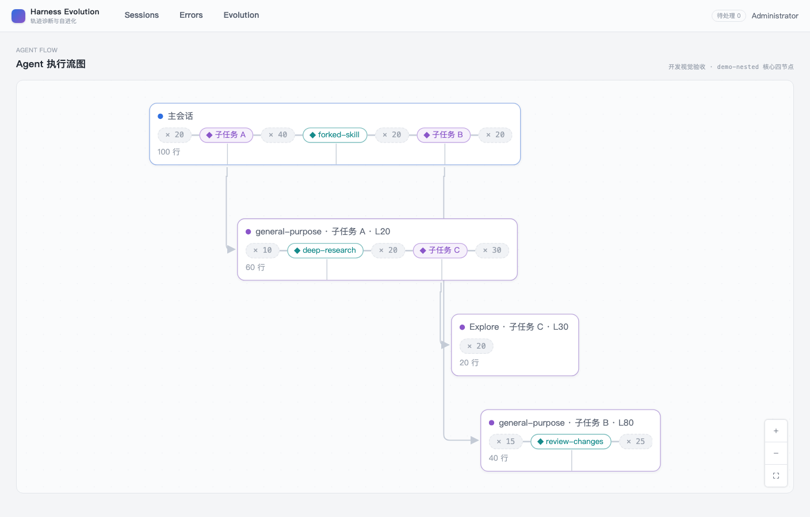
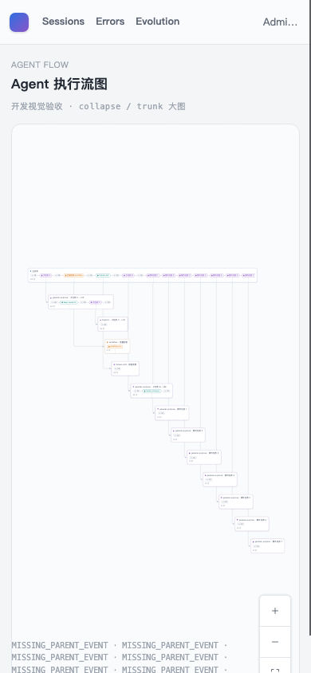

- Issue
- #42 · m3-02 graph layout core
- PR
- #104
- Code state
- b13dbdf + responsive fit fix
- Runtime
- FastAPI + Vite + Chrome CDP
- Evidence mode
- 真实 headless Chrome；macOS 锁屏，未使用原生 CUA
Harness Evolution · PR #104
m3-02 Agent 图布局修复复测
真实 FastAPI、Vite 与 headless Chrome 复测 Agent 执行流开发演示。修复容器缩放和节点展开后的视口适应，390×844 下展开大图的全部节点均位于画布内。
8复测场景
8通过
13展开节点
0控制台错误
Environment and Artifact
2026-10-26 · macOS · Chrome CDP · 1408×900 / 390×844Scenario Matrix
7 pass · 1 fixed| # | 场景 | 结果 | 观测 | 证据 |
|---|---|---|---|---|
| 01 | 原型四节点画布 | PASS | 核心画布显示 4 个节点和 3 条父边，层级、标签与行数宽度符合原型范围。 | screenshots/01-desktop-four-node.png |
| 02 | 节点与箭头 | PASS | 父边为正交路径且带闭合箭头；根、子 Agent 与 Workflow 使用不同状态色。 | E2E marker-end 与 border color assertions |
| 03 | Controls 与 Background | PASS | 放大、缩小、适应画布三个控制按钮具备可见图标、尺寸和无障碍名称。 | E2E controls assertions |
| 04 | 折叠大图 | PASS | 大图初始显示 main 与 collapse 两个节点，并标明折叠的子 Agent 数量。 | E2E collapse 2-node assertion |
| 05 | 展开 13 节点 | PASS | 点击 collapse 后展开为 13 个节点；布局结果稳定且 24px 内兄弟触发聚合为 trunk。 | E2E 2→13 assertion |
| 06 | 390px 自动适应 | FAIL → FIXED | 容器缩放和展开完成后重新 fitView；390×844 下 13 个节点的 bounding box 全部位于画布内。 | screenshots/02-before-mobile-expanded-blank.png screenshots/03-after-mobile-expanded-fit.png E2E allVisible bounding-box assertion |
| 07 | 无生产树请求 | PASS | 开发静态演示路由没有请求生产 Session tree，也没有渲染问题卡。 | E2E resource request count=0 |
| 08 | 控制台与资源清理 | PASS | 非预期 warning/error/exception 为 0；临时 API、Vite、Chrome 和端口均已清理。 | browserViolations=[] process cleanup verification |
Issues and Observations
P1 窄屏展开大图后节点落在视区外窄屏展开大图后节点落在视区外
- 现象
- 390×844 下点击折叠节点后，13 个节点位于画布可见区域之外。
- 预期
- 容器缩放和节点集合变化后重新计算 fitView，所有节点保持可见。
- 根因
- 只在首次 nodes-initialized 时执行 fitView，未监听容器尺寸和展开后的节点变化。
- 修复
- 监听 ResizeObserver 与节点集合变化，等待 DOM 更新后执行 fitView，并在 120ms 后重试一次。
- 回归
- 真实 Chrome 断言 13 个节点 bounding box 全部位于 390px 画布内。
已修复 · responsive fit
Evidence
4 screenshots



Automated Coverage Assessment
4 areas reviewed| 区域 | 覆盖 | 结论 | 建议 |
|---|---|---|---|
| 纯布局 | 22 项单测 | 输入不变性、重复 ID、24px trunk、行数宽度、嵌套与折叠均有断言。 | 后续改布局常量时同步更新几何快照。 |
| 响应式画布 | 真实 Chrome E2E | 390×844 展开 13 节点后全部 bounding box 位于画布内。 | 生产接线 m3-03 继续保留同一可见性断言。 |
| 原型视觉 | 真实画布 + 原型截图 | 水平条、正交边、状态色、Controls 和四节点层级一致。 | 领域问题卡仍由 m4 按 anchor descriptor 渲染。 |
| 生产 Session | 不在 m3-02 范围 | 开发 fixture 未请求生产 tree，生产图由 m3-03 接入。 | m3-03 复用本布局与 fitView 生命周期。 |
Conclusion
通过390px 展开后的节点不可见问题已修复；布局、视觉和动态 chunk 边界未发现新的产品问题。
- 容器 resize 与节点集合变化均触发安全重排。
- 真实 Chrome 13 节点全部位于移动端画布内。
- 无生产 tree 请求、问题卡越界或非预期控制台错误。
证据源：真实 headless Chrome/CDP、Vue Flow DOM geometry 与自动化测试。HTML 由 JSON renderer 生成。